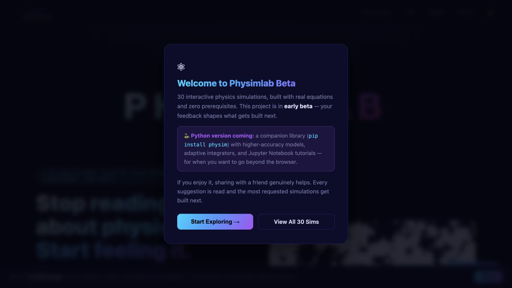
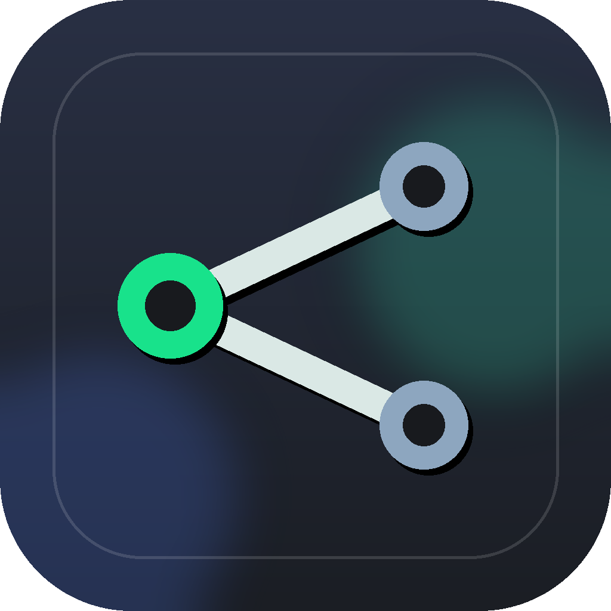

TCAD device simulation
Parametrised 3D sensor models, electric-field maps, depletion behaviour, and charge collection studies for candidate geometries.
CERN PhD student working on timing-aware detector simulations for LHCb VELO Upgrade 2, with a parallel interest in computational tools and technical systems for research.
My research connects 3D silicon sensor design, TCAD electric-field simulation, Garfield++ signal modelling, and detector characterisation studies. Beyond detector R&D, I enjoy delving into physics, computational methods, and technically minded projects that make complex ideas easier to explore and use.
Research lines
I work on the chain that connects a proposed 3D silicon sensor design to the signal a particle would leave in a future vertex detector.
Parametrised 3D sensor models, electric-field maps, depletion behaviour, and charge collection studies for candidate geometries.
Transporting charge through simulated fields to estimate induced current, timing response, and spatial performance before fabrication.
Connecting simulation assumptions to OPTIMA, Timepix4, laser and test-beam work, and production discussions with sensor partners.
Chronological selected work
A chronological thread of thesis work, current writing, and the simulation infrastructure behind my PhD.
Bachelor's thesis work on computing the cosmic microwave background power spectrum using a two-fluid approximation.
Analysis framework and detector characterisation work from my master's thesis, connecting measured behaviour to physical parameters.
Proceedings contribution gathering current TCAD and Garfield++ results from the TREDI work.
Parametrised device models, field extraction, and downstream signal simulations for comparing sensor layouts and operating conditions.
Events
Places where the research has been discussed, presented, or developed through focused detector communities.
Attended the intensive SIMDET school on semiconductor detectors and simulation tools, with lectures, real research and industry use cases, and hands-on sessions with detector simulation experts.
Presented work on 3D silicon sensor simulation, detector characterisation, and electronics at the annual meeting of the Subatomic Physics Section of the Dutch Physical Society.
Poster contribution at the 21st Trento Workshop on Advanced Silicon Radiation Detectors, presenting simulation-driven development of 3D silicon sensors for the timing requirements of a future LHCb vertex detector.
Poster presented during CERN's EP R&D Day, a programme-wide meeting on detector technologies for future experiments, including silicon sensors, electronics, mechanics, cooling, software, and system integration.
Outreach
I like making the route into science feel visible, especially for younger students from places where an international research path can feel distant.
Interviewed by a newspaper from La Rioja about studying physics, moving abroad, and starting a research path at CERN.
Gave a talk at my former high school through Divulgaciencia 2025, aiming to encourage students to pursue science, study abroad, and follow ambitious ideas.
Built for curiosity
Most of my projects start from the same itch: make an abstract system visible, controllable, or easier to reason about.

Interactive browser simulations paired with Physim Lab, a Python desktop framework for research-grade models and shared `.physim` scenarios.

A local macOS bridge that turns Calendar, Things 3, and Obsidian into one clean API for personal dashboards.
A Telegram interface for managing Vikunja tasks, built around quick capture and lightweight task-system control from chat.
Code from my bachelor's thesis for computing the cosmic microwave background power spectrum using a two-fluid approximation.
I also keep a Raspberry Pi dashboard and home-lab tools around for live personal data, local services, and small experiments in self-hosting.
Outside the lab
I like travelling, being outside, hiking, mountains, and the kind of quiet places that make it easier to reset after technical work.
Skiing, gym sessions, swimming, hiking, and generally keeping enough physical rhythm that the rest of life works better.
Small devices, retro handhelds, self-hosted dashboards, home-lab experiments, and the pleasing machinery of personal tools.
Contact
Reach out about silicon sensors, detector simulations, physics tools, or small systems that make research life easier.